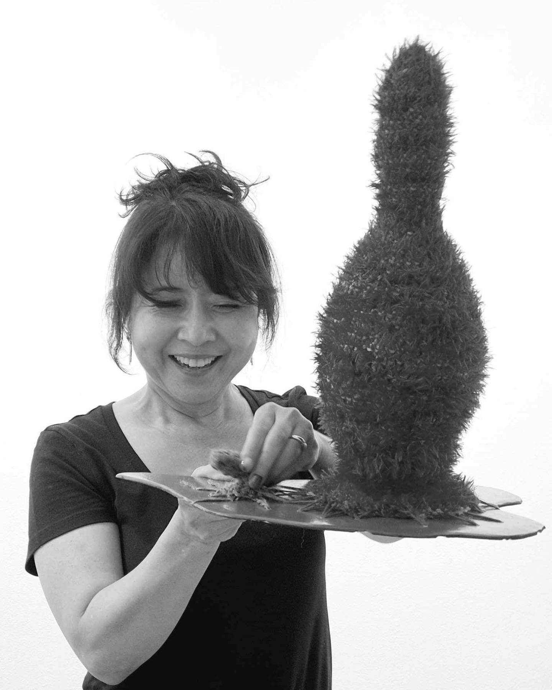

Hyunsuk Erickson is a Korean-American multidisciplinary artist based in Maryland whose practice encompasses sculpture, fiber, ceramics, and installation. Drawing from her experiences of migration, motherhood, and life between Korean and American cultures, Erickson creates immersive sculptural environments that examine identity, cultural memory, and material transformation.
Her ongoing Thingumabob World series merges crochet, knotting, embroidery, clay, wood, PVC, and repurposed synthetic materials into hybrid forms that oscillate between the organic and the artificial, the playful and the uncanny. Through these tactile, accumulative structures, Erickson investigates how personal history, inherited craft traditions, and contemporary material culture can be translated into new visual languages of resilience, adaptation, and belonging.
CV
Education & Experience
- 2023 Vermont Studio Center Residency, VT (02/12-03/04 2023)
- 2022 Fully awarded at Anderson Ranch residency, CO
- 2022 MFA, American University, Washington D.C.
- 2018~2019 Instructor, Montgomery College
- 2018 ~ Present Instructor, US Art Center
- 2007 Instructor at Carnegie Arts Center, Kansas, USA
- 2005- 2006 Art Instructor, Montgomery College, Maryland, USA
- 2004 BFA University of Colorado in Colorado Springs, USA
- 1991 BFA Chungjoo University, Chungjoosi, Korea
Exhibitions
2025
- June - NARS / Open Studio @ J&M Studios, Brooklyn, NY
- April - “Thinggy of Their Town” Hillyer Gallery, Washington D.C.
- February - More Than Teachers: Art Exhibit, US Arts Center, Vienna, VA
2024
- November - “Create – Inspire – Empower” The PARC at Tysons, Tysons, VA
- November - “High in Fiber: A Fiber Arts Exclusive Exhibition” Abington Art Center, Jenkintown, PA
- September - “Maternal & Offspring,” Sculpture Now Juried Group Exhibition, McLean, VA
2023
- October - “Something Still Singing” Kreeger Museum, Washington D.C.
- October - “Thingumabob World” Solo show, 636 Art Gallery, Seoul Korea
- October - Washington DC Ground Artist show, Kimboseong Art Center, Seoul Korea
- September - “Queering Nature” Sandy Spring Museum, MD
- June - “Balanced” Asian Arts & Culture Center, MD
- May - “Thingumabob Society” Solo Show, Burlington City Art, VT
- “Thingumabob Mirea (Future)” Solo Show, Korean Consulate, Washington D.C.
2022
- “In Orbit” Anderson Ranch Art Center, CO
- November - “Trash” Local Project Gallery, NYC
- “Interconnected” KCS Center, NYC
- July - “Reimagining Peace to Come” Maryland Hall, MD
- “HMAA Aneal Show” Korean Culture Center, Washington D.C.
- MFA Thesis Show, Katzen Museum, Washington D.C.
- April - Asia North 2022, Stillpoint Gallery / Moter House, Baltimore MD
- “Boundless Show” Korean Culture Center, Washington D.C.
- April - AU MFA Show, Touchstone Gallery, Washington D.C.
2021
- Annmarie Sculpture Garden & Art Center, MD
- “Asia In Maryland 2021”, AA&CC TU, MD
- “Unknown World” Solo Show, Korean Consulate, Washington D.C.
- June - “Infinite Spectrum” Riverside Gallery, NJ
2019-1991
- 2019 - “Four Season” Solo Show, Korean Consulate, Washington, D.C.
- 2019 - “Crossing” Show, Western Gallery, Los Angeles, CA
- 2018 - Invitational Show, NARS, New York
- 2017 - Invitational Solo Show Chungjoo International Biennale, Chungjoosi, Korea
- 2016 - Invitational Solo Show at Gallery HAC, Augusta, GA
- 2015 - Invitational Solo Show at Hire Grounds, Augusta, GA
- 2014 - Invitation Solo Show at Gallery Doo, Seoul, Korea
- 2013 - Invitational Solo Show at Vineyard at Florence, TX
- 2013 - Cherish Solo Art Show at NEWALL, Seoul, Korea
- 2012 - Invitation Solo Show, Korea Environment Minister, Rio+20, Seoul, Korea
- 2012 - Invitational Solo Show at Hill Design & Gallery, Georgetown, TX
- 2011 - Invitational Solo Show at Gallery J, Austin, TX
- 2011 - Invitational Solo Show at Gallery Woomyung, Hanam-si, Korea
- 2010 - Invitational Solo Show at AW Convention Center, Seoul, Korea
- 2010 - International Exchange Artists show, Dongkyung Department Gallery, Nagano, Japan
- 1991-2009 - Numerous invitational solo and group shows